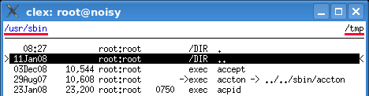

There are two file panels and two corresponding working directories:
Initial working directories can be set as bookmarks.

Overview of related functions:
| ctrl-X | exchange primary and secondary panels |
| alt-= | compare files in both directories and mark differences |
| ctrl-E | insert the name of the secondary working directory |
| <esc> ctrl-E | insert the name of the current working directory |
| <F5> |
mapped to COPY and will copy the files
from the current directory to the secondary directory
|
| <F6> |
as for <F5> but mapped to MOVE
|